일반 필드 · 필수
풀 바닥 기본
map/tiles/grass-01.png32 × 32 px
전체 불투명, 사방 반복 가능
체크무늬는 자리 표시용입니다. 게임에는 아직 적용되지 않았습니다. 표시 크기는 원본의 2배입니다.
일반 필드 · 필수
map/tiles/grass-01.png32 × 32 px
전체 불투명, 사방 반복 가능
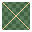
일반 필드 · 필수
map/tiles/grass-02.png32 × 32 px
전체 불투명, 기본 풀과 연결
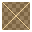
일반 필드 · 필수
map/tiles/dirt-path.png32 × 32 px
전체 불투명, 사방 반복 가능
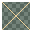
일반 필드 · 필수
map/tiles/rock-ground.png32 × 32 px
전체 불투명, 사방 반복 가능
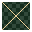
일반 필드 · 필수
map/tiles/forest-floor.png32 × 32 px
전체 불투명, 사방 반복 가능
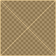
일반 필드 · 필수
map/tiles/path-edges.png96 × 96 px
32px 타일 3×3: 좌상·상·우상 / 좌·중앙·우 / 좌하·하·우하
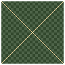
일반 필드 · 필수
map/tiles/field-edges.png96 × 96 px
32px 타일 3×3, 바깥쪽은 투명
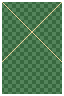
일반 필드 · 필수
map/objects/tree-01.png64 × 96 px
투명 배경, 발 기준 (32, 92)
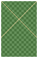
일반 필드 · 선택
map/objects/tree-02.png64 × 96 px
투명 배경, 발 기준 (32, 92)
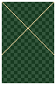
일반 필드 · 필수
map/objects/tree-dense.png64 × 96 px
투명 배경, 발 기준 (32, 92), 겹쳐 배치
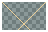
일반 필드 · 필수
map/objects/rock-01.png48 × 32 px
투명 배경, 발 기준 (24, 28)
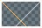
일반 필드 · 선택
map/objects/rock-02.png48 × 32 px
투명 배경, 발 기준 (24, 28)
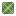
일반 필드 · 선택
map/objects/grass-tuft.png16 × 16 px
투명 배경
일반 필드 · 선택
map/objects/flowers.png16 × 16 px
투명 배경
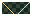
일반 필드 · 필수
map/objects/shadow.png32 × 16 px
투명 배경, 반투명 짙은색 납작한 형태
공통 UI · 필수
ui/panels/panel-default.png48 × 48 px
9-slice: 가장자리 16px, 투명 모서리
공통 UI · 필수
ui/panels/panel-modal.png48 × 48 px
9-slice: 가장자리 16px, 투명 모서리
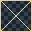
공통 UI · 필수
ui/panels/panel-tooltip.png32 × 32 px
9-slice: 가장자리 8px
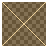
공통 UI · 필수
ui/panels/minimap-frame.png48 × 48 px
9-slice: 가장자리 16px, 중앙 투명
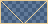
공통 UI · 필수
ui/buttons/button-normal.png48 × 24 px
9-slice: 가장자리 8px, 글자 제외
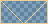
공통 UI · 필수
ui/buttons/button-hover.png48 × 24 px
기본 버튼과 같은 외곽, 글자 제외
공통 UI · 필수
ui/buttons/button-pressed.png48 × 24 px
기본 버튼과 같은 외곽, 글자 제외
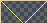
공통 UI · 필수
ui/buttons/button-disabled.png48 × 24 px
기본 버튼과 같은 외곽, 글자 제외
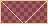
공통 UI · 필수
ui/buttons/button-danger.png48 × 24 px
9-slice: 가장자리 8px, 글자 제외
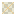
공통 UI · 필수
ui/icons/close.png16 × 16 px
투명 배경, 아이콘만
공통 UI · 선택
ui/icons/back.png16 × 16 px
투명 배경, 아이콘만
공통 UI · 선택
ui/icons/gold.png16 × 16 px
투명 배경
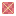
공통 UI · 선택
ui/icons/heart.png16 × 16 px
투명 배경
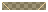
공통 UI · 필수
ui/bars/bar-frame.png48 × 12 px
9-slice: 가장자리 4px, 중앙 투명
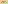
공통 UI · 필수
ui/bars/hp-fill.png8 × 4 px
가로 반복 가능
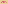
공통 UI · 필수
ui/bars/boss-hp-fill.png8 × 4 px
가로 반복 가능
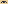
공통 UI · 필수
ui/bars/bar-empty.png8 × 4 px
가로 반복 가능
일반 필드 · 필수
map/tiles/path-inner-corners.png64 × 64 px
32px 타일 2×2: 좌상·우상 / 좌하·우하, 투명 배경
일반 필드 · 필수
map/tiles/field-inner-corners.png64 × 64 px
32px 타일 2×2, 불규칙 외곽 안쪽 연결, 투명 배경
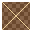
여관 · 필수
inn/tiles/wood-floor.png32 × 32 px
불투명, 사방 반복 가능
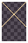
여관 · 필수
inn/tiles/wall.png32 × 48 px
불투명, 가로 반복 가능, 위쪽 벽과 아래 걸레받이
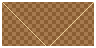
여관 · 필수
inn/objects/counter.png96 × 48 px
투명 배경, 발 기준 (48,44)
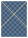
여관 · 필수
inn/objects/bed.png48 × 64 px
투명 배경, 발 기준 (24,60)
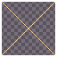
여관 · 필수
inn/objects/forge.png64 × 64 px
투명 배경, 발 기준 (32,60), 불꽃은 별도 효과
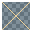
여관 · 필수
inn/objects/anvil.png32 × 32 px
투명 배경, 발 기준 (16,28)
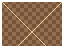
여관 · 필수
inn/objects/potion-shelf.png64 × 48 px
투명 배경, 발 기준 (32,44)
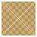
여관 · 필수
inn/objects/door.png48 × 48 px
투명 배경, 발 기준 (24,44), 글자 제외
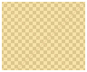
여관 · 필수
inn/effects/door-light.png96 × 80 px
투명 배경, 반투명 금빛, 빛이 아래쪽 입구에서 위로 넓어짐
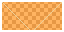
여관 · 필수
inn/effects/forge-fire.png64 × 32 px
투명 배경, 16×32px 프레임 4개 가로 배열
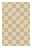
여관 · 필수
inn/npcs/innkeeper.png32 × 48 px
투명 배경, 발 기준 (16,44), 이름·말풍선 제외
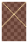
여관 · 필수
inn/npcs/blacksmith.png32 × 48 px
투명 배경, 발 기준 (16,44), 이름·말풍선 제외
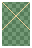
여관 · 필수
inn/npcs/potion-merchant.png32 × 48 px
투명 배경, 발 기준 (16,44), 이름·말풍선 제외
공통 UI · 필수
ui/icons/settings.png16 × 16 px
투명 배경, 저장·새 게임은 공통 버튼 재사용
공통 UI · 필수
ui/icons/chevron-down.png8 × 8 px
투명 배경
공통 UI · 필수
ui/icons/chevron-up.png8 × 8 px
투명 배경
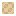
공통 UI · 선택
ui/icons/attack.png16 × 16 px
투명 배경
공통 UI · 선택
ui/icons/attack-speed.png16 × 16 px
투명 배경
공통 UI · 선택
ui/icons/critical-chance.png16 × 16 px
투명 배경
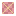
공통 UI · 선택
ui/icons/critical-damage.png16 × 16 px
투명 배경
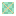
공통 UI · 선택
ui/icons/evasion.png16 × 16 px
투명 배경, 이동 속도 아이콘 아님
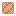
공통 UI · 선택
ui/icons/threat.png16 × 16 px
투명 배경
공통 UI · 선택
ui/icons/clock.png16 × 16 px
투명 배경
공통 UI · 선택
ui/icons/minimap-player.png8 × 8 px
투명 배경
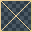
공통 UI · 필수
ui/panels/item-slot.png32 × 32 px
9-slice: 가장자리 4px, 중앙 어두운 바탕
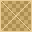
공통 UI · 필수
ui/panels/item-slot-selected.png32 × 32 px
9-slice: 가장자리 4px, 기본 슬롯과 동일 외곽
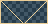
공통 UI · 필수
ui/panels/input-field.png48 × 24 px
9-slice: 가장자리 8px, 글자·커서 제외
공통 UI · 필수
ui/panels/tooltip-tail.png8 × 8 px
투명 배경, panel-tooltip과 색상 통일
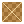
아이템 · 필수
items/chest-closed.png24 × 24 px
투명 배경, 발 기준 (12,22)
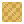
아이템 · 필수
items/chest-open.png24 × 24 px
투명 배경, 발 기준 (12,22)
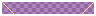
아이템 · 필수
items/potions.png96 × 16 px
투명 배경, 16×16px 6칸: common/rare/epic/heroic/legendary/mythic
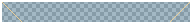
아이템 · 필수
items/equipment.png192 × 24 px
투명 배경, 24×24px 8칸: 검/활/지팡이/투구/갑옷/장갑/신발/대검
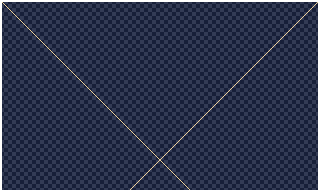
보스 전장 · 필수
boss/map/background.png320 × 192 px
불투명, 가로 반복 가능, 캐릭터·보스 제외
보스 전장 · 필수
boss/map/ground.png32 × 32 px
불투명, 가로 반복 가능, 윗면과 앞면 포함
보스 전장 · 필수
boss/map/pillar.png48 × 128 px
투명 배경, 패럴랙스 배경 장식
보스 전장 · 필수
boss/effects/slam-warning.png96 × 16 px
투명 배경, 빨간 타격 범위, 피해 판정은 코드
보스 전장 · 필수
boss/effects/slam-fist.png64 × 96 px
투명 배경, 아래쪽이 주먹 끝, 보스 몸체와 별개
보스 전장 · 필수
boss/effects/slam-impact.png128 × 32 px
투명 배경, 먼지·돌 파편